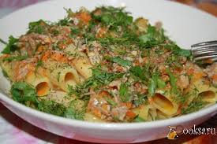

Рыбное филе с яблоками и маринованными огурцами «Эгейское»• 200 г макаронных изделий в форме рожков (казеречче)
• 500 г вареного филе любой рыбы
• 3 сваренных вкрутую яйца
• 1 яблоко
• 1 луковица
• 1 маринованный огурец
• 1 стакан майонеза
• любая зелень, сахар, уксус, перец и соль — по вкусу
Макаронные изделия сварите в подсоленной воде, откиньте на дуршлаг, промойте и дайте воде стечь. Филе рыбы нарежьте кусочками, сбрызните уксусом, посыпьте солью, сахаром и дайте пропитаться 20 минут.
Яблоко, лук и огурец измельчите, 2 яйца нарежьте кусочками. Смешайте все подготовленные продукты и залейте соусом. Готовый салат украсьте нарезанным дольками оставшимся яйцом и рубленой зеленью. Для соуса майонез смешайте с 1 ч. ложкой сахара, солью и перцем.
Рыбное филе с яйцами, лимоном и зеленым горошком «Морское мозаичное»
• 100 г вареных макарон
• 200 г отварного филе любой рыбы
• 4 сваренных вкрутую яйца
• 1 лимон
• 4 ст. ложки консервированного зеленого горошка
• 4 ст. ложки оливкового масла
• зелень укропа и соль — по вкусу
Рыбу, яйца, макароны и очищенный лимон нарежьте кубиками. Смешайте подготовленные продукты, посолите и заправьте оливковым маслом. Готовый салат украсьте зеленым горошком и посыпьте измельченной зеленью укропа.
Рыба в томатном соусе с маринованными огурцами по-милански «Популярная»
• 400 г вареных макарон
• 300 г любой консервированной рыбы в томатном соусе
• 2 маринованных огурца
• 2 ст. ложки консервированного зеленого горошка
• 1 ст. ложка лимонного сока
• 3 ч. ложки кетчупа
• 2 ст. ложки майонеза
• зелень укропа — по вкусу
Огурцы нарежьте мелкими кубиками, смешайте с измельченной рыбой, охлажденными макаронами и горошком. Смешайте кетчуп с майонезом и лимонным соком. Полученной смесью заправьте подготовленные продукты. Готовый салат посыпьте измельченной зеленью укропа.
Тунец с кукурузой, зеленым луком и сладким перцем «Морское золото»
• 250 г макаронных изделий в форме ракушек (конкильетте)
• 200 г консервированного тунца в масле
• 120–130 г консервированной кукурузы
• 1 сладкий красный перец
• 1 пучок зеленого лука
• сок 1 лимона
• 3–4 ст. ложки майонеза
• соль — по вкусу
Макаронные изделия сварите в подсоленной воде и откиньте на дуршлаг. Слейте масло из-под консервированного тунца в макароны, тщательно перемешайте и дайте остыть.
Лук мелко нарежьте, перец нарежьте полосками, кукурузу откиньте на дуршлаг. Подготовленные продукты смешайте с макаронами и залейте заправкой из майонеза и лимонного сока.
Тунец с фасолью и луком по-итальянски «Энцо-проказник»
• 250 г макаронных изделий в форме перьев (пенне, пенне ригате)
• 1 банка (180 г) консервированного тунца в собственном соку
• 1 банка (360 г) белой мелкой консервированной фасоли в собственном соку
• 150 г стручковой фасоли
• 2 луковицы
• 1/2 стакана мясного или овощного бульона
• 4 ст. ложки винного уксуса
• 1 ч. ложка дижонской горчицы
• 5 ст. ложек оливкового масла
• перец и соль — по вкусу
Макаронные изделия сварите в подсоленной воде и откиньте на дуршлаг. Стручковую фасоль сварите, откиньте на дуршлаг и обдайте холодной водой. Рыбу разомните вилкой, лук нарежьте полукольцами, фасоль откиньте на дуршлаг.
Смешайте все подготовленные продукты, заправьте соусом и поставьте в холодильник минимум на 1 час. Для соуса уксус смешайте с горчицей, солью, перцем, оливковым маслом и разбавьте бульоном.
Лосось с луком-пореем, огурцами и петрушкой «От Донателлы»
• 200 г вареных макаронных изделий в форме ракушек (конкильетте)
• 200 г консервированного лосося в собственном соку
• 1 стебель лука-порея (белая часть)
• 1 огурец
• 1 ст. ложка 3 %-ного уксуса
• 4 ст. ложки растительного масла
• зелень петрушки, перец и соль — по вкусу
Смешайте растительное масло с уксусом, солью и перцем. Полученной смесью полейте макаронные изделия и перемешайте. Рыбу освободите от костей и нарежьте тонкими ломтиками. Огурец нарежьте кружками, лук-порей — кольцами.
Выложите кольца лука-порея по краю блюда. В центр положите макаронные изделия и рыбу. Между лососем и луком-пореем выложите кружки огурца. Подавайте, посыпав измельченной зеленью петрушки.
Копченый лосось с кукурузой, виноградом и лимоном «Кавателли-мистериозо»
• 200 г макаронных изделий в форме ракушек (кавателли)
• 200 г филе копченого лосося
• 4 помидора черри
• 1 огурец
• 1 банка консервированной кукурузы
• 1 ст. ложка каперсов
• 2 ст. ложки винограда без косточек
• 1 лимон
• 1 ст. ложка бальзамического уксуса
• 1 ч. ложка сахара
• 2 ст. ложки рубленой зелени укропа
• 2 ст. ложки растительного масла
• перец и соль — по вкусу
Макаронные изделия сварите в подсоленной воде, откиньте на дуршлаг и заправьте растительным маслом. Филе лосося нарежьте тонкой соломкой, огурец — кубиками, помидоры — кружками. Цедру лимона натрите на мелкой терке, мякоть нарежьте кубиками.
Подготовленные продукты смешайте с кукурузой, виноградом, каперсами и заправьте соусом. Для соуса взбейте масло, уксус, соль, сахар, перец, зелень укропа и лимонную цедру.
Копченая рыба с яблоками, сельдереем и майонезом «Перужда»
• 125 г макаронных изделий в форме рожков или ракушек (казеречче, ньокки или кавателли)
• 200 г любой копченой рыбы (кроме сельди)
• 1–2 яблока
• 1 стакан нарезанного кусочками корня сельдерея
• 1 небольшая луковица
• 1 стакан майонеза
• красный молотый перец и соль — по вкусу
Макаронные изделия сварите в подсоленной воде, откиньте на дуршлаг, промойте и дайте воде стечь. Яблоки очистите от сердцевины и нарежьте мелкими кусочками. Рыбу освободите от костей и нарежьте кусочками. Яблоки и рыбу смешайте с сельдереем.
Подготовленные продукты заправьте смешанным с тертым луком майонезом, посолите и поперчите. Готовый салат тщательно перемешайте.
Маринованная килька с авокадо, кедровыми орешками и перцем чили «Деликатеза»
• 200 г макаронных изделий в форме рожков (казеречче)
• 200 г маринованной кильки
• 1 авокадо
• 4 ст. ложки кедровых орешков
• 1 луковица
• 1/2 стручка перца чили
• 2 ст. ложки лимонного сока
• 4 ст. ложки винного уксуса
• 4 ст. ложки растительного масла
• перец и соль — по вкусу
Макаронные изделия сварите в подсоленной воде, откиньте на дуршлаг, заправьте 1 ст. ложкой растительного масла и охладите. Авокадо разрежьте пополам, удалите косточку, очистите от кожуры, мякоть нарежьте тонкими ломтиками и сбрызните лимонным соком. Кильку очистите от внутренностей и хребтов и нарежьте небольшими кусочками. Смешайте все подготовленные продукты с кедровыми орешками и заправьте соусом.
Для соуса перец чили очистите от семян, промойте и мелко нарежьте. Добавьте рубленый лук, уксус, оставшееся масло, соль и перец. Полученный соус тщательно перемешайте.
Копченая скумбрия с маринованными огурцами и йогуртом «Скандинавская»
• 200 г макаронных изделий в форме рожков (казеречче)
• 400 г филе скумбрии горячего копчения
• 200 г маринованных огурцов
• 2 помидора
• 1 луковица
• 2 сваренных вкрутую яйца
• 350 г натурального йогурта
• 2 ст. ложки винного уксуса
• 1 ст. ложка французской горчицы
• 2 ч. ложки карри
• 1 ч. ложка сахара
• 3 ст. ложки растительного масла
• 1 пучок укропа
• перец и соль — по вкусу
Макаронные изделия сварите в подсоленной воде, откиньте на дуршлаг, заправьте 1 ст. ложкой растительного масла и охладите. Филе скумбрии нарежьте кусочками толщиной 1 см, огурцы — ломтиками, лук — полукольцами. Часть укропа мелко нарубите.
Смешайте все подготовленные продукты, заправьте соусом и дайте пропитаться 10 минут. Затем добавьте нарезанные дольками помидоры. Готовый салат посыпьте рублеными яйцами и украсьте веточками укропа. Для соуса взбейте оставшееся масло с уксусом, йогуртом, рубленым укропом, горчицей, карри, сахаром, солью и перцем.
Копченая скумбрия с кукурузой, луком-пореем и орехами «Аджитато»
• 200 г макаронных изделий в форме перьев (пенне, пенне ригате)
• 100 г филе копченой скумбрии
• 100 г консервированной кукурузы
• 1 стебель лука-порея
• 1 сладкий маринованный перец
• 1 ст. ложка винного уксуса
• 4 ст. ложки арахисового масла
• любая зелень и орехи, кайенский молотый перец, черный молотый перец и соль — по вкусу
Макаронные изделия сварите в подсоленной воде, откиньте на дуршлаг и заправьте частью масла. Лук-порей нарежьте кольцами, маринованный перец — соломкой, филе скумбрии — ломтиками.
Подготовленные продукты смешайте с макаронными изделиями и кукурузой и полейте заправкой. Для заправки уксус взбейте с оставшимся маслом, солью, кайенским и черным перцем. Готовый салат посыпьте рубленой зеленью и измельченными орехами.
Сардины с фенхелем и изюмом под соусом «Преданный Лучано»
• 230–250 г спагетти
• 300 г консервированных сардин в масле
• 1 головка фенхеля
• 1/3 стакана изюма без косточек
• 3 ст. ложки томатной пасты
• 1/2 ч. ложки лимонного сока
• 1 ч. ложка семян укропа
• соль — по вкусу
Спагетти сварите в подсоленной воде, откиньте на дуршлаг, сохранив полстакана отвара для соуса. Полголовки фенхеля нарежьте кубиками, полголовки — полукольцами.
Спагетти смешайте с нарезанным полукольцами фенхелем, измельченными сардинами, изюмом и полейте соусом. Готовый салат украсьте нарезанным кубиками фенхелем. Для соуса смешайте лимонный сок, томатную пасту, семена укропа, соль, влейте отвар и все тщательно взбейте.
Морепродукты с брокколи, цукини, помидорами и маслинами «Марсельские»
• 400 г макаронных изделий в форме спиралек (фузилли)
• 250 г смеси замороженных морепродуктов
• 250 г брокколи
• 250 г цукини
• 3 помидора
• 1 луковица
• 250 г овощного бульона
• 2 ст. ложки лимонного сока
• 12 маслин без косточек
• 1 ч. ложка горчичного порошка
• 2 ст. ложки рубленой зелени базилика
• 2 ст. ложки рубленой зелени петрушки
• 2 ст. ложки растительного масла
• ломтики лимона, веточки петрушки, кайенский молотый перец и соль — по вкусу Макаронные изделия сварите в подсоленной воде и откиньте на дуршлаг.
Морепродукты поварите 5 минут в подсоленной воде, охладите и смешайте с соусом. Полученную смесь поставьте в холодильник минимум на 30 минут. Для соуса смешайте лимонный сок, соль, перец, горчичный порошок, 1 ст. ложку бульона, растительное масло и зелень.
В оставшемся овощном бульоне поварите 5 минут разобранную на соцветия брокколи, затем положите ломтики цукини и поварите еще 1 минуту. Бульон слейте и охладите овощи. Лук нарежьте полукольцами, помидоры — кубиками, маслины — колечками. Макаронные изделия смешайте с подготовленными морепродуктами и овощами. Готовый салат украсьте веточками петрушки и ломтиками лимона.
Кальмары с луком, оливками и маринованным сладким перцем «Фриули»
• 150 г макаронных изделий в форме спиралек (фузилли)
• 600 г филе мелких кальмаров
• 6 сладких красных маринованных перцев
• 2 огурца
• 2 луковицы
• 200 г зеленого лука
• 24 оливки без косточек
• 1/2 стакана растительного масла
• листья зеленого салата и соль — по вкусу
Для соуса:
• 1 зубчик чеснока
• 1/4 ч. ложки сахара
• 3 ст. ложки маринада из-под сладкого перца
• 3 капли соуса табаско
• 4 ст. ложки растительного масла
• перец и соль — по вкусу
Макаронные изделия сварите в подсоленной воде и откиньте на дуршлаг. Кальмары нарежьте колечками толщиной полсантиметра, обжаривайте 2 минуты на растительном масле и выложите на бумажное полотенце для удаления излишка масла. Зеленый и репчатый лук, оливки, маринованный перец нарежьте тонкими колечками.
Смешайте все подготовленные продукты, заправьте соусом и поставьте в холодильник на 1 час. Готовое блюдо выложите на листья зеленого салата и по краям уложите нарезанные кружками огурцы.
Для соуса взбейте масло с мелко рубленным чесноком, солью, сахаром, перцем и соусом табаско. В конце взбивания добавьте маринад из-под сладкого перца.
Креветки с дыней, авокадо и коньяком «Кваттордичи»
• 250 г макаронных изделий в форме рожков (казеречче)
• 200 г креветок
• 200 г кочанного сельдерея
• 1 медовая дыня
• 1 авокадо
• 150 г натурального йогурта
• сок 1 лимона
• 3 ст. ложки сливок
• 2 ст. ложки коньяка
• 2 ст. ложки майонеза
• 1 пучок укропа
• 1 щепотка белого перца
• 1 щепотка кайенского перца
• соль — по вкусу
Макаронные изделия сварите в подсоленной воде, откиньте на дуршлаг, промойте и дайте воде стечь. Креветки облейте холодной водой, обсушите и сбрызните 2 ст. ложками лимонного сока. Дыню разрежьте пополам, удалите семена и нарежьте мякоть острым ножом. Авокадо разрежьте пополам, удалите косточку, мякоть нарежьте полукруглыми ломтиками и сбрызните оставшимся лимонным соком.
Стебли сельдерея нарежьте мелкими кусочками. Мелко нарубите немного зелени сельдерея. Укроп мелко нарежьте, отложив несколько веточек для украшения. Смешайте макаронные изделия, фрукты, креветки, зелень и заправьте соусом. Готовый салат украсьте веточками укропа. Для соуса смешайте майонез, сливки, коньяк, йогурт, приправьте солью, белым и кайенским перцем. Полученный соус тщательно перемешайте.
Креветки с помидорами, сладким перцем и малиновым уксусом «Маргаритки»
• 200 г мелких макаронных изделий в форме риса (орзо)
• 20 вареных креветок
• 1 сладкий красный перец
• 1 сладкий желтый перец
• 3 помидора
• 3 ст. ложки растительного масла
• зелень укропа, перец и соль — по вкусу
Для малинового уксуса:
200 г малины
• 500 мл столового уксуса
• 1 ст. ложка сахара
Макаронные изделия сварите в подсоленной воде, откиньте на дуршлаг, промойте и дайте воде стечь. У перца удалите плодоножки и семена. Перец и помидоры нарежьте мелкими кубиками. Креветки очистите от панциря.
Смешайте макаронные изделия с овощами, добавьте часть креветок, заправьте малиновым уксусом, растительным маслом, посолите и поперчите. Готовый салат украсьте оставшимися креветками и измельченной зеленью укропа.
Для малинового уксуса малину слегка промойте проточной водой и тщательно обсушите бумажными салфетками. Половину ягод разомните с сахаром и положите в банку. Уксус немного нагрейте и залейте им малину. Банку плотно закройте и оставьте в прохладном месте на 1–2 дня.
Полученный уксус процедите и перелейте в бутылку. Добавьте оставшиеся целые ягоды малины и дайте настояться 1 неделю. (Малиновым уксусом заправляйте овощные и фруктовые салаты, добавляйте его в соусы и маринады для мяса и птицы, а также используйте для консервирования овощей.)
Крабовые палочки с маслинами, каперсами и вином «Дионисийские»
• 400 г вареных мелких макаронных изделий (диталини ореккьетте)
• 200 г крабовых палочек
• 2 огурца
• 2 помидора
• 100 г твердого сыра
• 2 ст. ложки маслин без косточек
• 2 ст. ложки каперсов
• 2 ст. ложки сухого белого вина
• 1 ст. ложка лимонного сока
• 1 ч. ложка горчицы
• 1/2 ч. ложки сахара
• 4 ст. ложки оливкового масла
• любая зелень — по вкусу
Крабовые палочки, огурцы, помидоры и сыр нарежьте ломтиками и смешайте. Добавьте нарезанные колечками маслины, каперсы, макаронные изделия и перемешайте. Готовый салат полейте соусом и посыпьте измельченной зеленью. Для соуса оливковое масло смешайте с вином, лимонным соком, горчицей и сахаром.
Крабовые палочки с пекинским салатом и оливками под соусом «Деликато»
• 250 г макаронных изделий в форме ракушек (конкильони)
• 400 г крабовых палочек
• 2 огурца
• 2 помидора
• 3–4 листа пекинского салата
• 2–3 ст. ложки каперсов
• 100 г сыра
• оливки без косточек, оливковое масло и соль — по вкусу
Для соуса:
• 2 ст. ложки сухого белого вина
• 1 ст. ложка лимонного сока
• 1 ч. ложка горчицы
• 1/4 ч. ложки сахара
• 5 ст. ложек оливкового масла
• любая зелень и чеснок — по вкусу
Макаронные изделия сварите в подсоленной воде, откиньте на дуршлаг и смешайте с оливковым маслом. Крабовые палочки нарежьте кусочками, помидоры и огурцы мелко нарежьте, листья салата нарвите небольшими кусочками.
Подготовленные продукты смешайте с макаронными изделиями, добавьте каперсы, оливки, нарезанный кусочками сыр и полейте соусом. Для соуса смешайте оливковое масло, вино, лимонный сок, горчицу, сахар, мелко нарубленную зелень и пропущенный через пресс чеснок. Полученный соус тщательно взбейте.